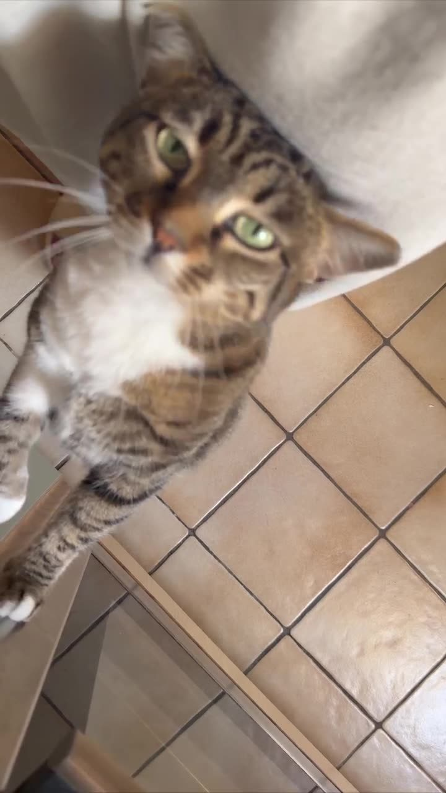

Urlaubsbetreuung Stuttgart · geprüfte Studierende
Urlaubsbetreuung in Stuttgart — Ihr Tier bleibt zu Hause

Zwei Wochen Italien, ein Kongress in Berlin, ein Wochenende bei den Eltern: Ihre Pfotenpatin kommt morgens und abends, füttert, geht raus, holt die Post und schickt Ihnen jeden Tag, wie es läuft. Kein Tierheim, keine Pension, keine Fahrt.
- Feste Betreuungsperson
- Führungszeugnis und Probeeinsatz
- Foto nach jedem Besuch
- Versichert über die Fellpaten GmbH
Was in der Urlaubsbetreuung enthalten ist
Was in der Urlaubsbetreuung enthalten ist
Die Urlaubsbetreuung ist die Leistung, bei der Vertrauen am meisten zählt: Jemand hat Ihren Schlüssel und ist täglich in Ihrer Wohnung, während Sie weit weg sind. Deshalb läuft bei Fellpaten jede Urlaubsbetreuung über eine Patin, die Sie vorher kennengelernt haben — und deshalb bekommen Sie jeden Tag eine Rückmeldung, nicht nur bei Problemen.
Wir betreuen Hunde und Katzen im gewohnten Zuhause. Bei Hunden empfehlen wir zwei bis drei Besuche täglich mit ausreichend langen Runden; für Hunde, die nicht allein bleiben können, ist eine Übernachtung möglich — sprechen Sie uns an. Für Katzen sind zwei Besuche der Standard. Post, Pflanzen, Rollläden und Mülltonne übernehmen wir mit, damit das Haus bewohnt aussieht.
- 22 €pro Tag mit zwei Besuchen
- 1 : 1eine feste Patin je Tier — keine wechselnden Gesichter
Enthalten
Zwei Besuche täglich, morgens und abends, Zeiten nach Absprache
Füttern, Wasser, Katzenklo bzw. Gassirunden — wie zu Hause gewohnt
Post reinholen, Pflanzen gießen, Rollläden, Müll
Tägliches Foto mit zwei Sätzen; bei Auffälligkeiten sofort ein Anruf
Tierarzt-Notfallplan und Notfallkontakt, beim Kennenlernen festgehalten
Einsatzgebiet
Urlaubsbetreuung Stuttgart — in diesen Stadtteilen
Unsere Patinnen und Paten wohnen dort, wo sie betreuen. Kurze Wege sind der Grund, warum die Mittagsrunde pünktlich stattfindet.
- Stuttgart-Mitte
- Stuttgart-West
- Stuttgart-Nord
- Stuttgart-Ost
- Stuttgart-Süd
- Bad Cannstatt
- Feuerbach
- Zuffenhausen
- Vaihingen
- Degerloch
- Möhringen
- Botnang
- Fellbach
- Kornwestheim
- Ludwigsburg
- Remseck am Neckar
Ihr Stadtteil fehlt? Fragen Sie trotzdem an — das Team wächst mit jedem Semester, und im Umland bis Ludwigsburg und Fellbach sind wir bereits unterwegs.
Häufige Fragen
Urlaubsbetreuung Stuttgart: was Kundinnen fragen
Was kostet Urlaubsbetreuung für Hund oder Katze in Stuttgart?
22 € pro Tag mit zwei Besuchen. Ein Besuch täglich kostet 11 €, drei Besuche 33 €. Zwei Tiere im selben Haushalt kosten nichts extra. Eine Übernachtung bieten wir auf Anfrage an.
Wie früh muss ich die Urlaubsbetreuung buchen?
Für Sommerferien und Weihnachten möglichst vier Wochen vorher, sonst zwei Wochen. Beim ersten Mal braucht es davor ein Kennenlernen — planen Sie das ein.
Was passiert, wenn mein Tier im Urlaub krank wird?
Ihre Patin ruft Sie an. Beim Kennenlernen halten wir fest, welche Tierarztpraxis zuständig ist, wer entscheiden darf und bis zu welchem Betrag. Niemand fährt ohne diese Absprache auf eigene Faust irgendwohin.
Kann mein Hund allein bleiben, wenn nur zweimal jemand kommt?
Manche ja, viele nicht. Beim Kennenlernen besprechen wir ehrlich, ob zwei Besuche reichen oder ob drei Besuche, eine Tagesbetreuung oder eine Übernachtung besser sind. Wir raten lieber ab, als einen unglücklichen Hund zu hinterlassen.
Woher weiß ich, dass wirklich jemand da war?
Sie bekommen jeden Tag ein Foto aus Ihrer Wohnung mit Zeitstempel und zwei Sätzen. Das ist keine Höflichkeit, sondern Teil des Auftrags.
Nächster Schritt
Anfrage in vier Schritten, Vorschlag innerhalb eines Werktags
Weitere Leistungen in Stuttgart: Hundesitter Stuttgart · Gassi-Service Stuttgart · Katzensitter Stuttgart